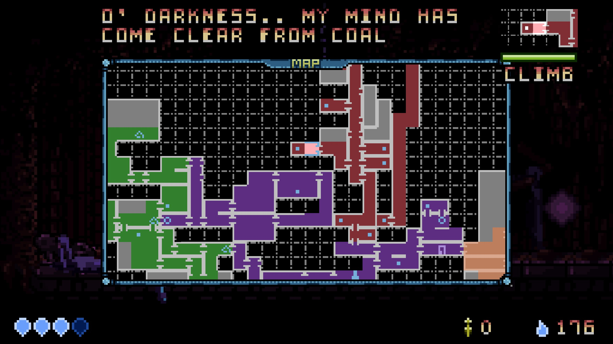
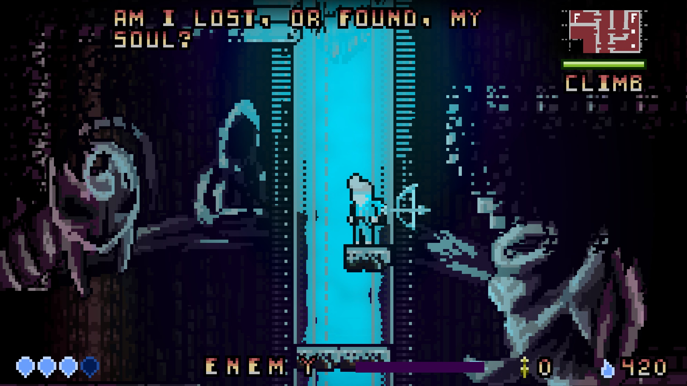

Easy to Pick Up, Challenging to Master
Designed for the Journey
Metroidvania
"What profit is it to a man if he gains the whole world and loses his own soul?"
The classic formula. Explore, get lost, power up, open new paths forward.
Everything about this game stems from that which makes Metroidvania's fun to play.
The classic formula. Explore, get lost, power up, open new paths forward.
Everything about this game stems from that which makes Metroidvania's fun to play.

Venture through Light and Darkness
Learn new mechanics in the light, and put them to the test in the darkness.

Power Ups Around Every Corner
Grow stronger through exploration.If you get stuck going in one direction there’s many other paths to explore.
Exploration and killing enemies rewards you with money for purchasing movement techniques at the town which will make moving around more fun, dodging enemies easier, and allow for clearing new obstacles.
The final version plans to be very non-linear and open after an initial section of linearity.

Explore an Interconnected World
Multiple paths to the same goal. Guides the player with an invisible hand by preventing backtracking to too many areas at a time.

Detailed In-Game Map
The in game map hints to important locations and keeps track of where the player
has been so in subsequent play sessions they can pick up where they left off.

Custom Pixel Based Lighting
Breathtaking views created by blending modern technology with retro
pixel art.
Lore
"To get lost in a world, you must first believe that is has something to offer."
What's the fun of playing a Metroidvania without purpose? Kingdom of Light has 7-8 planned "Story Arcs" which twist and turn the player's experience and give meaning to everything you do.
What's the fun of playing a Metroidvania without purpose? Kingdom of Light has 7-8 planned "Story Arcs" which twist and turn the player's experience and give meaning to everything you do.
Fight an Age Old Battle
Darkness has overtaken the land bringing with it their ideals of spreading suffering. Find those that still have the will to fight and gain strength to restore light to the land.
Deep Backstory
Extensive lore prevalent through the environments and characters met on your journey.
Uncover the secrets of the world and break the cycle of despair, or give in to it.
Metroidvania-Centric Front Story
The story which the main character plays through is designed to emphasize familiar Metroidvania concepts,
as well as make them question their actions.
Meaning in Music
Motifs utilized throughout the soundtrack. Musicial ideas are used, reused, corrupted, and modified to provide additional meaning and elicit emotions in different circumstances.Some songs have lyrics which can optionally be seen on screen to show these concepts to people who aren't familiar with music theory.
Speed Runners
"Perfection is the result of getting so used to facing darkness that you forget the feeling of fear."
You long for the pressure of being near achieving a seemingly impossible goal where one small mistake will cause you to lose all your progress.
You're looking for a game that will force you to master all the hidden mechanics and execute them flawlessly for a legendary victory.
Not many will travel this path, but it is also what makes it so rewarding.
You long for the pressure of being near achieving a seemingly impossible goal where one small mistake will cause you to lose all your progress.
You're looking for a game that will force you to master all the hidden mechanics and execute them flawlessly for a legendary victory.
Not many will travel this path, but it is also what makes it so rewarding.

Designed For Speedrunners
Movement Mechanics are designed to be fluid and build on top of each other. Maintain speed across rooms by chaining together various techniques.Knowledge gating allows you to play through the game differently on subsequent playthroughs and chart different routes through the game.
Customize Your Gameplay
Essence Remnants can be found across the game world and customize various aspects of the game. Various Remnants come with trade offs which increase difficulty and risk, but allow traversing through the game quicker.